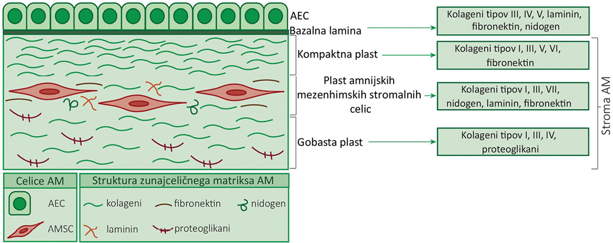
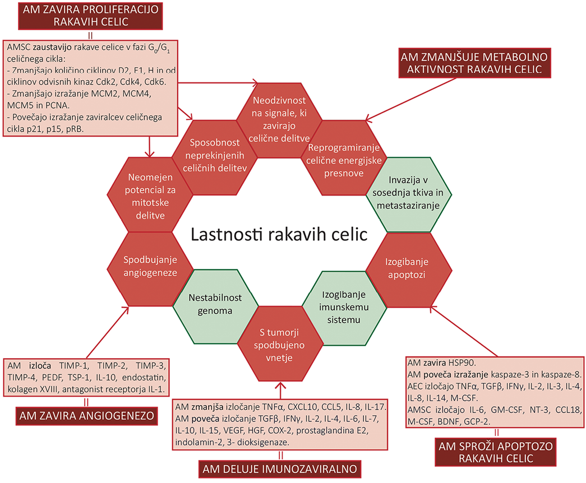

Celično-biološki mehanizmi delovanja amnijske membrane proti raku in možnosti za njeno uporabo pri zdravljenju raka
Cell-biological mechanisms of amniotic membrane anticancer activity and the possibilities of its use in anticancer therapy
Izvleček
Abstract
1 Uvod
Amnijska membrana (AM) je ekstraembrionalna ovojnica, ki obdaja s plodovnico napolnjeno votlino, v kateri se razvija plod (1). Sestavljajo jo enoskladni epitel amnijskih epitelnih celic, debela bazalna lamina in vezivno tkivo (tj. mezenhimski del AM, imenovan tudi stroma) (2,3). Iz amnijske membrane so osamili dve populaciji celic z lastnostmi matičnih celic, in sicer amnijske epitelne celice (AEC) in amnijske mezenhimske stromalne celice (AMSC) (Slika 1). Obe populaciji izražata površinske in znotrajcelične označevalce, značilne za matične celice (npr. SSEA-4, TRA1–60, TRA1–81, OCT-4 idr.) in se lahko diferencirata v različne tipe celic (4,5). Prednost AM je tudi v tem, da je njena uporaba etično sprejemljiva, saj posteljico in AM po porodu navadno zavržejo.

Amnijska membrana ima številne lastnosti, zaradi katerih je primerna za klinično uporabo: a) zagotavlja zunajcelični matriks, ki omogoča pritrjanje in proliferacijo celic (6); b) spodbuja epitelizacijo in zavira brazgotinjenje (3,7-10); c) deluje protivnetno (11); č) ni imunogena (6,12); d) deluje angiogeno in protiangiogeno (13-15); e) deluje protimikrobno (16,17); f) sintetizira naravne inhibitorje metaloproteinaz (18)in g) deluje protirakavo (14,19,20).
Prvi dokumentirani primer uporabe AM v klinične namene sega v leto 1910, ko je Davis uporabil AM pri rekonstrukciji kože (21). Zdaj AM najpogosteje uporabljajo v oftalmologiji, predvsem pri rekonstrukcijah roženice in očesne veznice, saj spodbuja regeneracijo epitela in zavira vnetje ter brazgotinjenje (22). Poleg tega se AM uporablja tudi v dermatologiji za zdravljenje opeklin in kroničnih razjed (23) ter pri nekaterih kirurških postopkih, npr. pri preprečevanju adhezij po operaciji, v abdominalni kirurgiji pri preprečevanju peritonealnih adhezij (24) in zdravljenju gastroshize (25), pri operacijah rekonstrukcije vagine (26) in sečil (26-28).
Rak je pri ljudeh drugi najpogostejši vzrok smrti. Kljub napredku pri preprečevanju in zdravljenju rakavih bolezni se število zbolelih za rakom zaradi povečevanja in staranja prebivalstva ter različnih dejavnikov tveganja (kajenje, debelost, prehrana, okoljski dejavniki) še vedno povečuje (29). Tumorji so kompleksni sistemi, ki poleg rakavih celic vključujejo tudi celice imunskega sistema, endotelne celice ter z rakom povezane fibroblaste (
2 Amnijska membrana zavira proliferacijo rakavih celic
Normalne, zdrave celice natančno nadzorujejo biosintezno pot in sproščanje signalnih molekul, ki spodbujajo njihovo rast ter jih vodijo v mitotsko delitev oz. zavirajo rast celic in preprečujejo njihov vstop v mitotsko delitev. S tem zagotavljajo vzdrževanje normalne tkivne arhitekture in funkcije. Rakave celice med razvojem pridobijo sposobnost izogibanja celičnim signalom, ki zavirajo celične delitve (32), zaradi česar pridobijo sposobnost neprestanih mitotskih delitev.
Rast nekaterih rakavih celičnih linij hematopoetskega in nehematopoetskega izvora zavirajo AMSC. Pod vplivom AMSC se celični cikel rakavih celic ustavi v fazi G0/G1, saj AMSC povzročijo, da se v rakavih celicah zmanjša količina spodbujevalcev napredovanja celičnega cikla in poveča količina zaviralcev celičnega cikla. Zaviralni učinek AMSC na rakave celice so dokazali tako pri neposrednem stiku rakavih celic in AMSC v kokulturi, kot tudi v primeru, ko so bile celice fizično ločene in so bile AMSC nasajene na nosilce s porozno membrano, ki so bili vstavljeni v večprekatno petrijevko, rakave celice pa so bile nasajene na dno večprekatne petrijevke (33-35).
Natančneje, v rakavih celicah se v prisotnosti AMSC zmanjša izražanje genov določenih ciklinov (ciklini D2/ E1/ H) in od ciklinov odvisnih kinaz (
3 Amnijska membrana spodbuja apoptozo rakavih celic
Apoptoza je programirana celična smrt, ki je naravna prepreka v razvoju raka. Ta se razvije kot posledica več genskih in kromosomskih mutacij, ki normalno celico spremenijo v rakavo, pri čemer je pridobitev sposobnosti za izogibanje apoptozi eden glavnih korakov karcinogeneze (32,36).
Pri gojenju rakavih celic v kokulturi z AEC ali pod vplivom kondicioniranega medija iz AM (tj. hranilnega medija, v katerem so gojili intaktno AM ali le celice iz AM) se v rakavih celicah poveča izražanje proapoptoznih proteinov (14) in značilno zmanjša preživetje teh celic (37). Jiao in sod. (38) so pri podganah dokazali, da AMSC zavirajo celično migracijo in da se zaradi apoptoze, ki jo AMSC sprožijo, zmanjša prostornino možganskih tumorjev gliomov za 30–50 % (14,38) (Slika 2). Niknejad in sod. (2014) so dokazali, da kondicionirani medij iz AM zavira izražanje proteina toplotnega šoka Hsp90, kar sproži zaustavitev celičnega cikla in apoptozo ter zavre angiogenezo (Slika 2) (14).

Tudi proteinski izvleček AM, ki ga pripravijo s homogenizacijo in sonifikacijo AM, sproži apoptozo celic jetrnega karcinoma
Vzroki za zmanjšano preživetje rakavih celic pod vplivom AM so v citotoksičnih dejavnikih, ki jih izločajo AEC. Citotoksične dejavnike izločajo tudi AMSC (41) (Slika 2).
Dosedanje raziskave kažejo, da AM lahko zaustavi proliferacijo rakavih celic ali celo sproži njihovo apoptozo (20,33,38,40). Razlike v delovanju AM so lahko posledica uporabe različnih delov AM (samo AMSC ali intaktna AM) in različnih rakavih celičnih linij (celične linije hematopoetskega in nehematopoetskega izvora, epitelne celice, jetrne celice). Ob možni uporabi AM pri zdravljenju raka se je zato treba zavedati, da se načini, s katerimi AM zavira rast ali sproži apoptozo rakavih celic, razlikujejo glede na tip celic in to tudi upoštevati pri načrtovanju klinične študije.
4 Amnijska membrana vpliva na angiogenezo
Zaradi svoje hitre rasti potrebujejo tumorji izdatnejši vir hranil in kisika ter intenzivnejše odvajanje presnovnih odpadkov in ogljikovega dioksida v primerjavi z normalnimi tkivi. Za preživetje tumorja je zato bistvena zmožnost razvoja žil – angiogeneza, na katero vpliva tudi AM.
Intaktna AM z AEC onemogoča angiogenezo (14,15). AEC namreč izločajo protiangiogene dejavnike, ki zavirajo nastajanje novih krvnih žil in s tem preprečujejo oskrbo tumorja s hranili ter kisikom. AM vsebuje tudi različne proteine zunajceličnega matriksa, npr. kolagen IV, fibronektin in kolagen VII, ki so vpleteni v zaviranje angiogeneze v roženici (8,15) (Slika 2). Če iz AM odstranimo AEC, prevladajo proangiogeni dejavniki, ki jih izločajo AMSC (Slika 2) (15,42).
Vse dosedanje študije kažejo, da AEC in proteini zunajceličnega matriksa AM zavirajo angiogenezo, medtem ko jo AMSC spodbujajo (15,42).
5 Amnijska membrana zmanjšuje energijsko presnovo rakavih celic
Za nenadzorovano celično proliferacijo je nujna sprememba celične energijske presnove, ki omogoča rast in preživetje rakavih celic. V primerjavi z normalnimi (zdravimi) celicami, ki pridobivajo energijo predvsem z oksidativno fosforilacijo, rakave celice večinoma pridobivajo energijo z aerobno glikolizo (t. i. Warburgov učinek) (43). Takšne spremembe energijske presnove rakavim celicam omogočijo povečano tvorbo energije, zadostno biosintezo makromolekul in ohranjanje ravnovesja redoks ter s tem nastanek tumorjev (32,44).
Proteinski izvleček iz AM, pripravljen s homogenizacijo in sonikacijo AM, vpliva na presnovo rakavih celic (Slika 2). Mamede in sod. (2014) so dokazali, da proteinski izvleček iz AM zavira energijsko presnovno aktivnost pri 14 različnih celičnih linijah, pri petih celičnih linijah celo več kot 50 % presnovne aktivnosti (celične linije raka prostate PC3, raka črevesja WiDr, raka trebušne slinavke PANC-1, hepatokarcinoma HepG2 in Hep3B2.1–7) (45). Obenem so dokazali, da proteinski izvleček iz AM spodbuja presnovno aktivnost štirih drugih celičnih linij (celične linije raka debelega črevesja C2BBe1 in LS1034, raka dojke HCC1954, raka žolčevodov TFK-1), zato predvidevajo, da je odziv rakavih celic na AM specifičen glede na genetski profil oziroma tip rakave celice (40).
6 Ali lahko imunozaviralno delovanje amnijske membrane izkoristimo v prid zdravljenju raka?
Vpliv imunskega sistema na rakave celice je predmet številnih raziskav, ki so pokazale, da lahko imunski sistem omogoči transformacijo normalnih celic v rakave celice, vpliva na imunogenost tumorja ter glede na stopnjo razvoja tumorja in njegovega mikrookolja prepreči ali nadzoruje rast tumorja (46). Tako npr. vnetje prispeva k razvoju tumorja, saj z njim pridejo v mikrookolje tumorja
AM deluje imunozaviralno preko različnih signalnih poti. Celice AM zavirajo diferenciacijo monocitov v dendritične celice in s tem zmanjšajo njihovo sposobnost stimulacije limfocitov T. Celice AM namreč ustavijo monocite v fazi G0 celičnega cikla in sintetizirajo IL-6, ki je vključen v zaviranje diferenciacije celic CD34+ in monocitov v dendritične celice (35) (Slika 2).
Celice AM (AMSC in AEC) zavirajo proliferacijo enojedrnih celic iz periferne krvi (
Različne študije kažejo, da rakave celice pogosto povečajo izločanje vnetnega kemokina IL-8 pri odzivu na kemoterapevtike ali druge stresne okoljske razmere (npr. hipoksijo) (51). S tem privabijo imunske celice v tumorsko mikrookolje in zato spodbudijo nastanek metastaz (52). Signalizacija IL-8 hkrati vpliva tudi na stimulacijo proliferacije (53), migracije, invazijo rakavih celic (54,55) in celo pomaga rakavim celicam, da se izognejo apoptozi (51,56). Magatti in sod. poročajo, da AEC in AMSC zavirajo izločanje IL-8 v kokulturi z dendritičnimi celicami (57). Predvidevamo, da tovrstni imunozaviralni učinek AM lahko z zaviranjem vnetja prispeva tudi k omejevanju razvoja tumorja.
Po drugi strani lahko imunozaviralni učinek AM tudi omejuje imunski odziv, ki ščiti pred razvojem tumorjev. Naravne celice ubijalke zaradi svoje citolitične aktivnosti in sinteze vnetnih citokinov igrajo pomembno vlogo pri protivirusnem in protirakavem imunskem odzivu. Delovanje naravnih celic ubijalk močno uravnavajo receptorji na površini celic, saj je za lizo tarčne celice potrebno izražanje liganda/ligandov na površini tarčne celice, ki ga/jih prepozna receptor naravne celice ubijalke. AEC sintetizirajo inhibicijski dejavnik migracije (MMIF), ki je zaviralec migracije makrofagov in hkrati zaviralec z naravnimi celicami ubijalkami posredovane lize celic (49,58).
Celice AM torej delujejo imunozaviralno, in sicer:
7 Zaključek
AM se zdaj najpogosteje uporablja v oftalmologiji in dermatologiji (26), hkrati pa narašča število študij, ki raziskujejo možnosti uporabe AM na drugih kliničnih področjih. Od leta 2002 je bilo v okviru ameriških Nacionalnih inštitutov za zdravje (National Institutes of Health, NIH) zaključenih 127 kliničnih študij, v katerih so preverjali možnost uporabe AM v kliniki, trenutno pa poteka 128 tovrstnih študij (59). Ker je področje uporabe AM pri potencialnem zdravljenju oziroma preprečevanju napredovanja rakavih bolezni sorazmerno novo področje, zaključenih kliničnih študij s tega področja še ni. Rezultati predkliničnih študij
8 Seznam kratic
•AM – amnijska membrana
•AMSC – amnijske mezenhimske stromalne celice
•AEC – amnijske epitelne celice
•BDNF – možganski nevrotrofični dejavnik (
•CCL2/5/18 – kemokin CCL2/5/18 (
•Cdk4/6 – od ciklinov odvisna kinaza 4/6 (
•CXCL1/9/10 – kemokin CXCL1/9/10 (
•COX-2 – ciklooksigenaza 2
•GCP-2 – granulocitni kemotaktični protein (
•GM-CSF – granulocitne in monocitne kolonije stimulirajoči dejavnik (
•HSP90 – protein toplotnega šoka 90 (
•ICAM – intravaskularna adhezijska molekula (
•IL – interlevkin
•IFNγ – interferon γ
•M-CSF – makrofagne kolonije stimulirajoči dejavnik (
•MCM2, -4, -5 – komponenta 2/4/5 vzdrževalnega kompleksa mini kromosoma (
•MMIF – inhibicijski dejavnik migracije makrofagov (
•PCNA – proliferajoči celični jedrni antigen (
•PEDF – dejavnik pigmentnega epitela (serpin F1 (SERPINF1)) (
•PBMC – enojedrne celice iz periferne krvi (
•PSA – prostatični specifični antigen (
•TNFα – tumor nekrotizirajoči dejavnik α (
•TGFβ – transformirajoči rastni dejavnik β (
•TIMP 1/2/3/4 – tkivni inhibitor metaloproteinaze 1/2/3/4 (
•TSP-1 – trombospondin-1
•VEGF – žilni endotelni rastni dejavnik (
9 Zahvala
Avtorji se iskreno zahvaljujemo Ginekološki kliniki Univerzitetnega kliničnega centra v Ljubljani in vsem porodnicam, ki so darovale amnijsko membrano v raziskovalne ali klinične namene. Najlepša hvala tudi Cvetani Tavzes za jezikovno redakcijo besedila. Delo je nastalo v okviru raziskovalnega programa št. P3–0108, projekta št. J4–7494 in projekta mladi raziskovalec, ki jih je sofinancirala Javna agencija za raziskovalno dejavnost Republike Slovenije iz državnega proračuna.